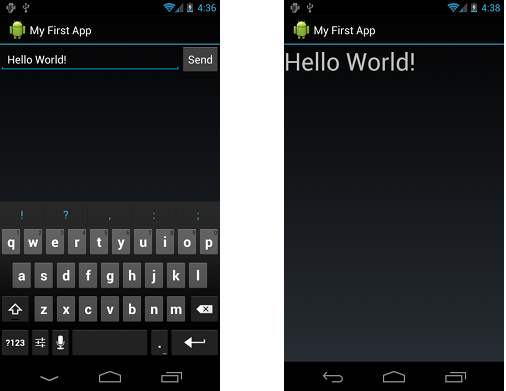

欢迎来到Android Training.在这里你将会发现有很多节课来帮助你在android上建立app，在各种framework主题下使用最好的实践。
每一个类都解释了解决问题所要求的步骤或者实现特性使用的代码和代码事例，让你在app中使用。
第一节关注于教你基础的要领。如果你是一个android的新开发者，你应该学习所有的课程，从Building Your First App开始。
欢迎来到Android application development!
这节课教你如何建立你的第一个android app.
你将会学习到如何创建一个Android项目并且运行这个app的可调试版本。
你也将会学习一些android app设计的基础，包括如何建立一个简单的用户界面和掌控用户输入。
在开始这节课之前，确定以你已经建立起了开发环境。你需要：
1. 下载android SDK
2. 安装Eclipse的ADT插件(如果你使用的是Eclipse的话)
3. 下载最新的SDK工具和平台工具，使用SDK Manager。
如果你还没有做完这些工作，请参考http://developer.android.com/sdk/index.html
一旦你完成了这些步骤，你就准备好开始这节课程了。
本课使用的教程模式是，增量的建立一个小的android app，来教会你一些关于Android开发的基础概念。因此跟随每一个步骤很重要。
Start the first lesson->
一个android工程包含你的android app的源码的所有文件。
Android SDK tools使得开始一个新的工程很简单，会自动生成一系列的默认工程目录和文件。
本节课展示了如何用Eclipse和命令行来建立一个新的工程。
1. 在Eclipse中，点击New Android App Project
2. 填写信息
Application Name是app name，给用户看的，对于这个工程我们使用"My First App" Project Name是你程序目录的名字，和在Eclipse可以看到的名字 Packeage Name是应用程序的包命名空间。你的包名字必须是唯一的。因此，你最好使用你的组织或者发布的域名空间。对于这个项目，我们使用com.example.myfirstapp。但是你不能在Google Play上用com.example的命名空间来发布程序。
Build SDK是你要编译程序的平台版本。通常都设置为最新的版本。你也可以用旧的，但是用新的版本可以使用新的特性和功能，在最新的设备上为用户体验进行优化。 Minimum Required SDK是你的程序支持的最低的版本。这是为了支持更多的设备，你应该设置它为支持你的app的核心特性的最低版本 剩下的设置都使用默认。
点击Next
3. 下面的屏幕提供工具帮助你为你的app创建一个launcher icon. 你可以有多种方法定制图标，以及工具为所有的屏幕分辨率产生一个图标。 在你发布你的app之前，你应该确定你的图标符合Iconography设计指导的规范。
点击Next
4. 现在你可以选择一个activity模板 对于这个工程选择BlankActivity然后点击Next
5. 所有其他的保持默认值，点击Finish.
你的android工程现在建立起来了，包含有一些默认的文件，你已经准备好编译app了，可以继续下一节课了。
如果你没有使用Eclipse，你可以使用命令行来完成：
1. 更改路径到Android SDK的tools/下面
2. 执行
android list targets
这会打印出你已经下载下来的Android 平台列表。找到你希望编译app的平台，记住目标的id。我们建议你选择最高版本的。
3. 执行：
android create project —target<target-id> —name MyFirstApp —path <path-to-workspace>/MyFirstApp —activity MainActivity —package com.example.myfirstapp
现在你的工程就建好了。可以继续下一节课了。
tips: 将platform-tools/ 也像tools/那样添加到PATH中。
如果你根据上一节课的内容创建了一个Android项目，它包含了一个默认的Hello World源文件，允许你运行app
如何运行你的app取决于两件事情：是否你有一个真实的android设备或者是否你使用的是Eclipse。本节课为你展示如何安装和运行你的app在设置设备上和模拟器上，使用Eclipse和命令行工具。
在运行app之前你需要关心一些目录和文件：
AndroidManifest.xml
这个文件描述了应用程序的基本树形和定义了它的组件。你将会学习到在这个文件中声明变量
src/
应用程序的主源码目录。默认的它包含了一个Activity类，当你的程序使用图标启动的时候运行。
res/
包含了一些子目录，是程序的资源
drawable-hdpi/
可绘制对象的目录，为高分辨率屏幕设计的。其他的可绘制目录包含了对其他分辨率设计的文件。
layout/
定义了用户界面
values/
其他变量的XML文件，比如字符串和颜色
当你编译运行默认的程序时，默认的Activity类开始并装载一个布局文件，结果很简单，但是对你理解如何运行程序很重要。
如果你有一个真实的设备，你可以安装并运行你的应用程序：
1. 把你的设备插入开发机器，使用USB线缆。如果你在windows下开发你需要安装驱动
2. 确保USB 调试是使能的
在Eclipse中运行app，打开工程点击Run，Eclipse将把程序安装到你的设备上并运行
或者使用命令行：
1. 改变目录到项目的根目录
ant debug
2. 确保platform-tools/路径在PATH中
adb install bin/MyFirstApp-debug.apk
3. 在设备上找到MyFirstActivity并且打开它
首先你需要创建一个Android Virtual Device (AVD),它允许你模拟多种不同的设备
1. 启动Android Virtual Device Manager， 点击图标或者命令行执行android avd（<sdk>/tools）
2. 点击New
3. 填写详细内容，填写名称，目标平台，SD卡大小和屏幕大小
4. 点击Create AVD
5. 选择新创建的AVD点击Start
6. 当模拟器启动之后，解锁屏幕
然后就可以使用了，方法和上面的一样
应用程序的用户界面使用View和ViewGroup的对象的阶层来建立。 View对象是通常的UI控件，比如按钮，text fields，而ViewGroup是不可见的view容器，定义了子views如何布局，比如在grid中或者在vertical list中。
Android提供了一个XML词汇表来表示View和ViewGroup的子类，你可以使用UI元素来定义你的UI
|
本课中，你将会创建一个XML，包含一个text field和一个button。
在下面的课程中，你会响应当按钮按下，发送text field中的内容到另外的activity。
打开activity_main.xml文件，位于res/layout/目录
BlankActivity模板创建了activity_main.xml文件，使用了RelativeLayout根视图和一个TextView子视图。
首先，删除<TextView>元素，并且把<RelativeLayout>元素改为<LinearLayout>。然后添加android:orientation属性，并且设置它为"horizontal"。
结果看起来像是：
<?xml version="1.0" encoding="utf-8"?>
<LinearLayout xmlns:android="http://schemas.android.com/apk/res/android"
xmlns:tools="http://schemas.android.com/tools"
android:layout_width="match_parent"
android:layout_height="match_parent"
android:orientation="horizontal" >
</LinearLayout>
LinearLayout是一个视图组(ViewGroup的子类)，将子视图布局为竖直或者水平的方向，根据指定的android:orientation属性。每一个LinearLayout子控件，出现在屏幕上的顺序取决于在XML中出现的顺序。
另外的两个属性，android:layout_width和android:layout_height，是为所有的view控件申请它们指定的大小。
因为在布局中LinearLayout是根view，它应该填满整个屏幕区域，通过设置宽和高为"match_parent"。这个值表明view应该扩展它的宽和高来match它的父视图的宽和高。
为了创建一个用户可编辑文本区域，添加一个<EditText>元素到<LinearLayout>中。
如同每一个View对象，你必须定义对应的XML属性来指出EditText对象的属性。
下面是代码：
<EditText android:id="@+id/edit_message"
android:layout_width="wrap_content"
android:layout_height="wrap_content"
android:hint="@string/edit_message" />
关于属性：
android:id
这为view提供了一个独一无二的标识符，你可以用它来在代码中引用这个对象，比如读取和操纵对象。
@符号是必须的，你要从XML文件中引用任何资源的时候都要用到。它后面跟随着一个资源类型(这个例子中是id)，一个斜线，然后是资源的名字(edit_message)。
在资源类型前的+号，仅当你第一次定义资源ID的时候需要。当你编译app的时候，SDK工具使用ID名字来创建一个新的资源ID，在工程的gen/R.java文件中，引用了EditText元素。一旦资源 ID用这种方式声明，其他的引用就不需要+号了。
android:layout_width 和 android:layout_height
不使用指定的长宽大小，warp_content值指定了view应该是尽可能大的去匹配内容。如果你使用了match_parent，那么EditText元素将会充满整个屏幕，因为它会匹配父控件LinearLayout的大小。
android:hint
这是一个默认的字符串，当text field为空的时候显示。不使用硬编码，而使用@string/edit_message。
当你在用户界面添加文本的时候，你应该总是把每一个字符串作为资源来指定。字符串资源允许你在一个地方管理整个的UI文本，方便找到和更新。也方便国际化app，使用不同的语言，通过提供可替换的字符串资源文件。
默认的，你的android项目包含了一个字符串文件在res/values/strings.xml。打开这个文件删除叫做hello_world的<string>。然后添加一个新的名字edit_message并设置值为Enter a message
你也可以添加一个Send字符串到按钮上，叫做button_send
strings.xml的结果看起来是：
<?xml version="1.0" encoding="utf-8"?>
<resources>
<string name="app_name">My First App</string>
<string name="edit_message">Enter a message</string>
<string name="button_send">Send</string>
<string name="menu_settings">Settings</string>
<string name="title_activity_main">MainActivity</string>
</resources>
现在在布局里面添加一个<Button>，在<EditText>元素下面：
<Button
android:layout_width="wrap_content"
android:layout_height="wrap_content"
android:text="@string/button_send" />
高度和宽度都是wrap_content，因此按钮的大小为其内部文本的大小。这个button不需要android:id属性，因为它没有被activity code引用。
现在的布局设计的是让EditText和Button控件尽可能大的匹配它们的内容，如下图所示
这对button来说工作的很好，但是对text field来说就不那么好了，因为用户可能会键入更长的内容。所以，最好是充满没有用到的屏幕区域。你可以在LinearLayout中使用weight属性来完成这一点，通过指定android:layout_weight属性。
weight的值是个数字，指定了每个view应该消耗的剩余空间的量，与旁边的view消耗的量有关。这就像是一种饮料配方中某种成分的量：“2份伏特加，1份咖啡利口酒“意味着三分之二的酒是伏特加。比如，如果你给了一个view的weight是2，另一个是1，总和是3，因此，第一个view填充剩余空间的三分之二，第二个view填充剩下的部分。如果你加入了第三个view，并且给它的weight是1，那么第一个view现在获得了一半的剩余空间，剩下的两个view各占了四分之一。
weight默认为0，因此，如果你只为一个view指定任意大于0的数字，那么这个view将会填充剩下的所有空间。因此，在你的布局中使用EditText元素填充空间，给它赋值1就好了，button没有weight。
<EditText
android:layout_weight="1"
... />
为了改进布局效率，当你指定weight的时候，你应该改变EditText的width为0dp。设置width为0改进了布局性能因为使用了wrap_content作为宽度，要求系统计算宽度是最终无关的，因为weight值要求另外一个宽度计算来填充剩下的空间。
<EditText
android:layout_weight="1"
android:layout_width="0dp"
... />
下图显示了给EditText分配weight的样子
这里有完整的布局文件：
<?xml version="1.0" encoding="utf-8"?>
<LinearLayout xmlns:android="http://schemas.android.com/apk/res/android"
xmlns:tools="http://schemas.android.com/tools"
android:layout_width="match_parent"
android:layout_height="match_parent"
android:orientation="horizontal">
<EditText android:id="@+id/edit_message"
android:layout_weight="1"
android:layout_width="0dp"
android:layout_height="wrap_content"
android:hint="@string/edit_message" />
<Button
android:layout_width="wrap_content"
android:layout_height="wrap_content"
android:text="@string/button_send" />
</LinearLayout>
这个布局是在你创建工程的时候SDK tools产生的默认的Activity类使用的。 你可以现在运行app来看一下结果。
可以直接在工具栏上点击运行按钮
或者通过命令行
ant debug
adb install bin/MyFirstApp-debug.apk
</exmaple>
*** Starting Another Activity
现在你有一个app，显示一个activity，包含一个文本域和一个按钮。本课中，你将会添加一些代码到MainActivity中，用来启动一个新的activity，当用户点击Send按钮的时候。
**** Respond to the Send Button
为了响应按钮的点击事件，打开main.xml布局文件，给<Button>元素添加android:onClick属性：
<example>
<Button
android:layout_width="wrap_content"
android:layout_height="wrap_content"
android:text="@string/button_send"
android:onClick="sendMessage" />
android:onClick的属性值，“sendMessage"是一个方法的名字，在activity中，当用户点击按键的时候系统会来调用。
打开MainActivity类，添加相应的方法
/** Called when the user clicks the Send button */
public void sendMessage(View view) {
// Do something in response to button
}
提示：在Eclipse中，Ctrl+Shift+O来导入没有导入的类
系统为了匹配在android:onClick中的方法，方法必须是：
是public的
返回值是void
只有一个参数是View
下面你将要填充这个方法来获取文本域内容并且发送到另外的activity中去
Intent是一个提供运行时绑定不同组件的对象(比如两个activites)。Intent表示为一个app想要作点什么事情。你可以使用Intent来完成很多的事情，但是大多数情况下它们被用来启动另外的一个activity。
在sendMessage()方法内部，创建一个Intent来启动一个activity，由DisplayMessageActivity调用的。
Intent intent = new Intent(this, DisplayMessageActivity.class)
这里使用的构造函数使用了两个参数：
Context作为第一个参数(this被使用是因为Activity类是Context类的一个子类)
Class是app的组件，系统会发送Intent给这个类，在这个例子中activity应该被启动
intent不仅允许你去启动另一个activity，而且允许传递一些数据给另外的activity。因此，使用findViewById()来获取EditText元素和他的文本值给intent:
Intent intent = new Intent(this, DisplayMessageActivity.class); EditText editText = (EditText) findViewById(R.id.edit_message); String message = editText.getText().toString(); intent.putExtra(EXTRA_MESSAGE, message);
Intent能够传递很多数据类型作为key-value对，叫做extras。putExtra()方法把key名字作为第一个参数，value作为第二个参数。
为了下一个activity来查询这个extra数据，你应该定义你的key使用一个公共常量。因此，在MainActivity类的顶部添加EXTRA_MESSAGE定义
public class MainActivity extends Activity {
public final static String EXTRA_MESSAGE = "com.example.myfirstapp.MESSAGE";
...
}
通常使用你的包名作为extras的前缀是比较好的，这确保了它的唯一性，因为你的程序要与其他的程序交互。
为了启动一个activity，你需要简单的调用startActivity()并且传给它你的Intent。系统会收到这个调用，并且启动Intent指定的activity的实例。
在新代码中，完整的sendMessage()方法如下：
/** Called when the user clicks the Send button */
public void sendMessage(View view) {
Intent intent = new Intent(this, DisplayMessageActivity.class);
EditText editText = (EditText) findViewById(R.id.edit_message);
String message = editText.getText().toString();
intent.putExtra(EXTRA_MESSAGE, message);
startActivity(intent);
}
现在你需要创建DisplayMessageActivity类
使用Eclipse创建一个新类
1. 在工具栏上点击创建新类的图标
2. 在窗口中打开Android，选择Android Activity，点击Next
3. 选择BlankActivity点击Next
4. 填充activity的细节
Project: MyFirstApp
Activity Name: activity_display_message
Layout Name: activity_display_message
Navigation Type: None
Hierarchial Parent: com.example.myfirstapp.MainActivity
Title: My Message
点击 Finish
如果你使用的是其他的IDE或者命令行工具，创建一个叫做DisplayMessageActivity.java的文件在src/目录下。
打开DisplayMessageActivity.java文件，如果你使用的是Eclipse创建的它，这个类已经包含了必须的onCreate()方法。同样也有一个onCreateOptionsMenu()的方法的实现，但是对于这个app你不需要它，因此你可以删除它。这个类看起来如下：
public class DisplayMessageActivity extends Activity {
@Override
public void onCreate(Bundle savedInstanceState) {
super.onCreate(savedInstanceState);
setContentView(R.layout.activity_display_message);
}
}
所有Activity的子类都必须实现onCreate()方法。当系统创建activity实例的时候会调用它。在这个方法里你必须定义activity的布局以及做一些初始化的工作。
你必须在manifest文件中声明所有的activities，AndroidManifest.xml，使用<activity>元素
当你使用Eclipse工具来创建activity的时候，它创建了默认的入口，如下：
<application ... >
...
<activity
android:name=".DisplayMessageActivity"
android:label="@string/title_activity_display_message" >
<meta-data
android:name="android.support.PARENT_ACTIVITY"
android:value="com.example.myfirstapp.MainActivity" />
</activity>
</application>
<meta-data>元素声明了这个activity的父activity在app的逻辑层次中的名字。
Android Support Library使用这个信息来实现默认导航行为，比如Up navigation。
注意：在安装的时候，你需要下载最新的Support Library.Eclipse自动的包含了这个库，如果你不使用eclipse，你可能需要手动的把这个库添加到你的工程里面
app现在可以运行了，因为在第一个activity中的Intent解决了指向的DisplayMessageActivity类。如果你现在运行app，点击Send按钮来启动第二个second activity,但是没有显示任何东西。
每一个Activity都被一个Intent引用，不管用户如何浏览。你能够获取启动你的activity的Intent通过getIntent()并且获取包含在内的数据。
在DisplayMessageActivity类中的onCreate()方法，获取intent和提取由MainActivity分发的message。
Intent intent = getIntent(); String message = intent.getStringExtra(MainActivity.EXTRA_MESSAGE);
为了把message显示在屏幕上，创建一个TextView空间并且使用setText()来设置文本。然后添加TextView作为activity的布局的根view，通过将它传递给setContentView()
DisplayMessageActivity中onCreate()方法的完整实现如下
@Override
public void onCreate(Bundle savedInstanceState) {
super.onCreate(savedInstanceState);
// Get the message from the intent
Intent intent = getIntent();
String message = intent.getStringExtra(MainActivity.EXTRA_MESSAGE);
// Create the text view
TextView textView = new TextView(this);
textView.setTextSize(40);
textView.setText(message);
// Set the text view as the activity layout
setContentView(textView);
}
现在你可以运行app了，当它打开的时候，敲一些信息，然后点击send，然后message将会出现在第二个activity中。
|  |
这就是你建立的第一个app。